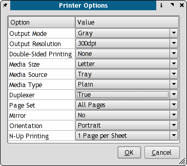
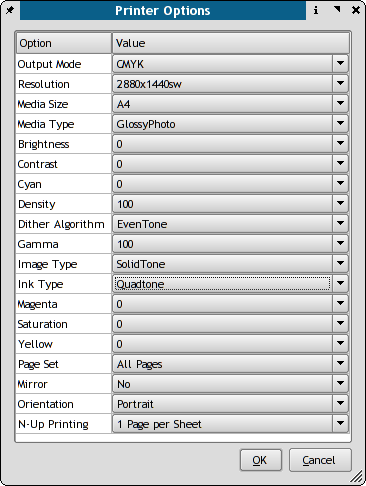

CUPS, GIMP Print and Scribus together can give very good print output on Linux, provided it is installed and configured properly. With Scribus you can "drive" CUPS directly from Scribus.
First, make sure you have the the correct CUPS development libraries installed before compiling Scribus. On Redhat, for example, they are named cups-devel. Complete details are in the BUILDING file with the source
Second, on many Linux distributions there are optional gimp-print drivers. These drivers are not only for gimp, but can be used in any program to give you more exacting print control and in some cases much better output with photographs. Often many inkjet printers on Linux are supported by more than one driver - typically an 'ijs' driver and gimp-print. The difference lies mostly in the added options versus some speed loss. By the way, the next release of the gimp-print drivers will be known as gutenprint to avoid confusion.
The cups control panel in Scribus with the regular ijs plus ghostscript driver:
|  |
http://localhost:631 to use the CUPS web interface. 2. Use the KDE Print Manager. No other option will give you full access to all the features with CUPS.The image below shows the difference with the GIMP-Print Plug-in installed.
|  |
The main difference is the more refined color and ink density adjustments available in GIMP Print. Often it will be slower than other drivers, but the output quality is the main reason. You can also use kprinter in combination with other programs which are not CUPS aware, but can benefit from high quality printing. As an example, Acrobat Reader on Linux before version 7.0.5 does not recognize CUPS, but has a command line window to call kprinter. Thus, you can with the correct settings, print high resolution PDF's with the same high quality as Scribus.
What I recommend with CUPS is to set up your everyday printer with the ijs or regular kprinter driver and then add a second printer instance with GIMP Print, so you have quicker output with everyday docs like text files etc..
Based on my experience working with a handful of true PostScript printers with Scribus:
When you are using a real PostScript printer on Linux, expecially more complex ones which have multiple bins, sorting or advanced image and resolution settings, ideally you have the PPD file which comes on the driver disk with the printer. If not try to download the latest from the manufacturer's site. Then use the cupstestppd tool to verify the file. This is a very important step.
A great many printer drivers come as windows .exe files. I know many of the HP ones are simple WinZip self extractors. Any recent wine will open them easily. Then, I strongly recommend that you run cupstestppd on the file to make sure it follows the PPD spec. If there is an error, and there are often minor ones, the actual specs are here:
http://partners.adobe.com/public/developer/ps/index_specs.htmlcupstestppd is a command line utility which you can use to verify the correctness of PPD files. What is a PPD file ? A PPD file is a specially formatted text file which can be used on Linux, MacOSX and Windows to install a true PostScript printer. On Linux in combination with foomatic and CUPS it is used for all printers to enumerate all the printer's capabilities. This command line tool verifies that the ppd file meets the specs for ppd files. It there are issues, it will indicate how to remedy this. cupstestppd is most useful when using the manufactuerer's supplied PPD on Linux.